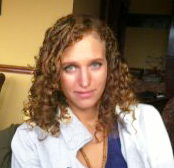

Hello!
My name is Tamara Bain.

I am a graduating computing science student in the
Bachelor of Computing Science Honors Internship Program at the University of Alberta. My main areas of interest are
software design, web development, bioinformatics and practical algorithms. But I'm
always interested in gaining experience in fields I haven't been exposed to. When I'm not
programming I can be found tinkering with my custom linux OS, making medieval armor for LARP events, or trying my hand at cooking Thai food.
Click on the sections below to view details about my work experience and education.
Grant MacEwan University
Sept 2010 - April 2012
University of Alberta
Sept. 2012 - April. 2015
WISEST Alumni
2007
Louise McKinney Scholarship
2011
MacEwan Achievement Award
2011 and 2012
Jason Lang Scholarship
2012 and 2013
Current GPA
3.9
University of Alberta Reserach Assistant
Contract Work, 2010 - 2012
- Performed thematic analyses on focus group transcripts and summarized them in a verbal presentation and written report.
University of Alberta Bioinformatics Research Assistant
June - August, 2011
- Wrote scripts for reading strings of virus RNA code and matching them to results in the virus database.
- Presented findings in end of year presentation and paper.
- Invited back for two term independent study course.
NSERC Research Assistant
May - August, 2012
- Worked on method for segmentation of radiospectrometer generated images of mineral deposits.
- Implemented and modified a wide variety of image procesing algorithms.
- Presented findings at an end of summer workgroup.
Pason Systems Software Development Intern
May 2013 - May 2014
- Worked on the Enterprise Applications team maintaining and and adding to internal operations software.
- Primarily web development using Python and JQuery.
Tall Tale Games Co-owner
May 2014 - Present
- Core member of the team responsible for launching and developing the Starfall science fiction LARP.
- Architect and developer of the LARP database and site.
- Invited on as a co-owner and stakeholder.
NoLemon Co-founder
January 2015 - Present
- Ongoing architect and developer of the NoLemon site.
- Invited on as a co-founder.